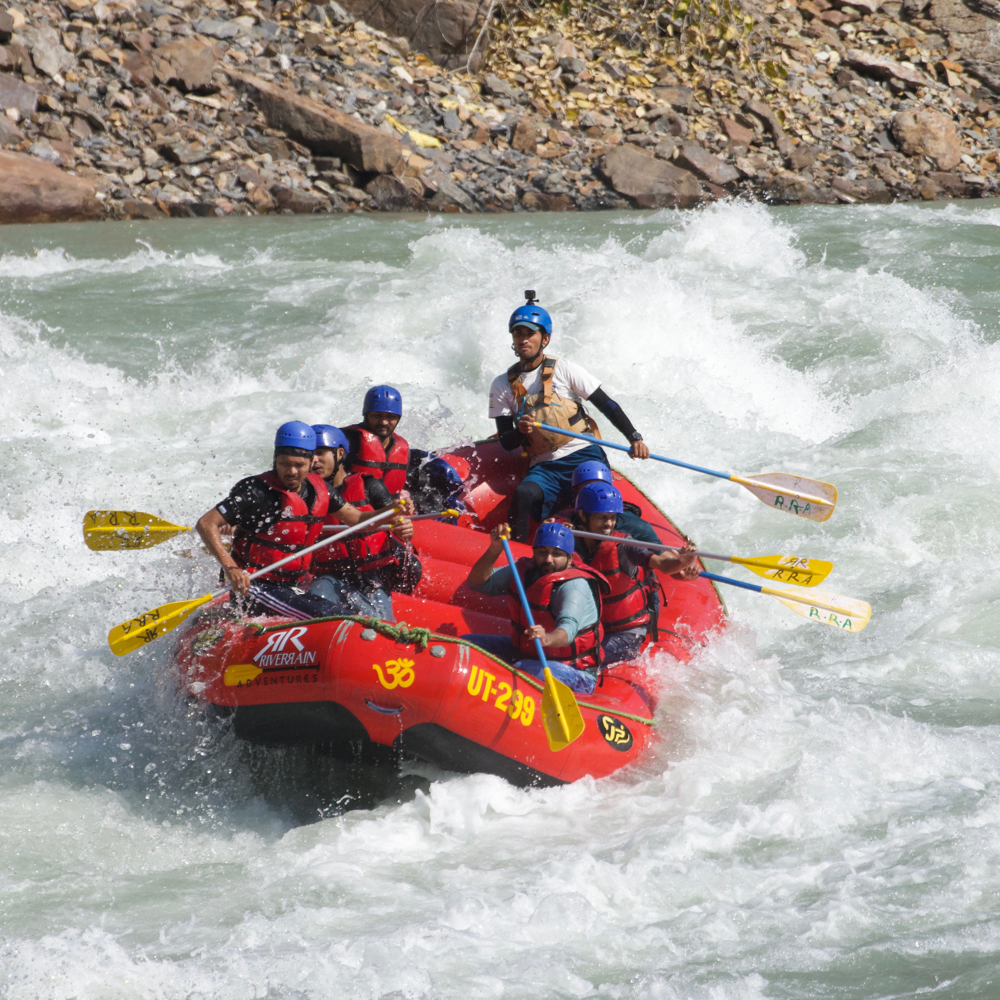
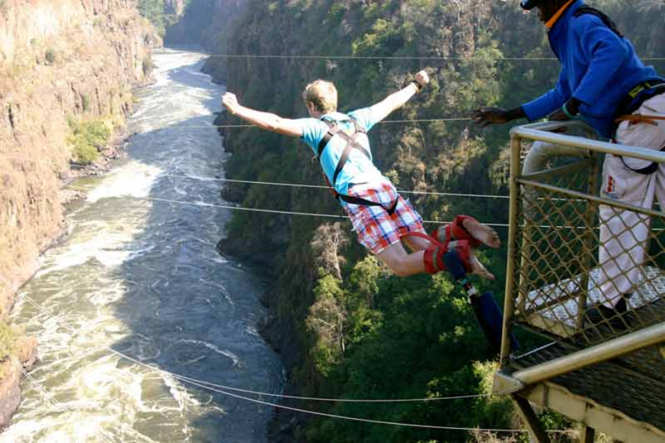
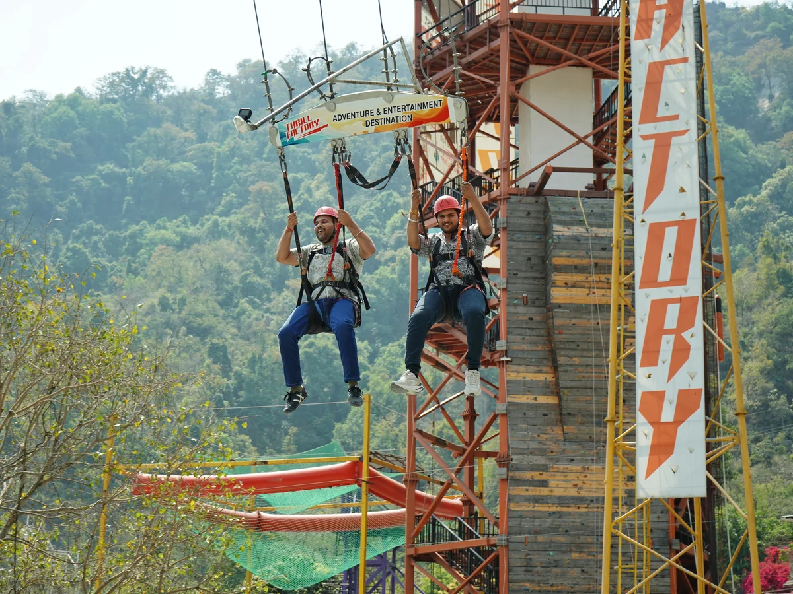
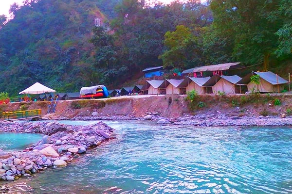

The Capital of Rapid Currents & Epic Plunges
Located in the foothills of the Himalayas where the holy Ganges breaks free from deep mountain stone, Rishikesh is an adventure powerhouse. While globally revered for yoga, it doubles as India’s ultimate water sports arena. Cut by massive rocky gorges and surrounded by the dense forests of Rajaji National Park, it serves up the country's most intense white-water rapids and extreme vertical drops.
Rishikesh carries a high-contrast energy that you won't find anywhere else. By morning, the air fills with the serene chiming of temple bells and ancient mantras. By afternoon, the riverbanks explode with raw adrenaline—groups of paddlers slapping paddles, wilderness campers building fires on white sand beaches, and thrill-seekers stepping out onto massive suspension platforms facing sheer mountain drops. It is where deep spirituality meets untamed action.

Conquer the legendary, churning rapids of the Ganges. Smash through famous Grade III and IV river drops like 'Three Blind Mice', 'The Wall', and 'Roller Coaster'.

Leap from a massive fixed-cantilever platform suspended over a rocky cliff. Plunge 83 meters straight down into a pristine wilderness ravine before snapping back safely.

Strapped into a full harness, launch yourself into a massive, heart-stopping sweeping arc over an alpine river valley, experiencing immense, raw gravitational forces.

Pitch rugged expedition tents on white sand beaches along the riverbanks. Sleep beneath an open canopy of stars flanked by wilderness hills and roaring water sounds.